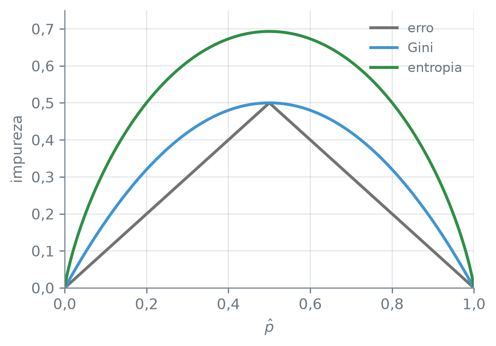
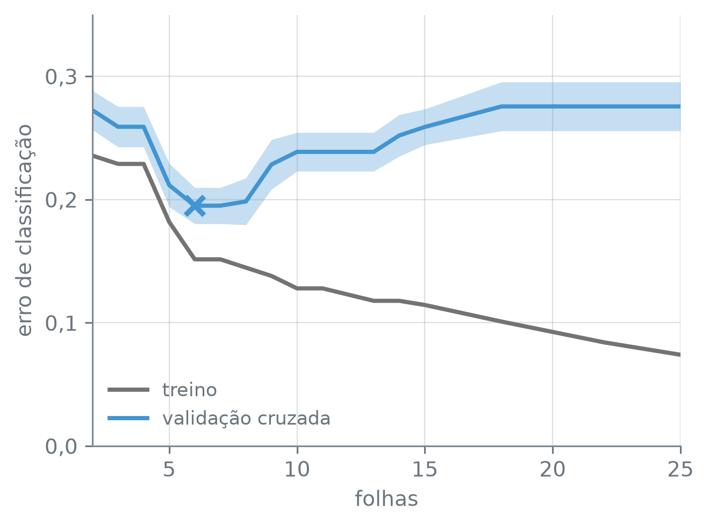

numero_br = lambda valor, casas=2: (
f"{valor:,.{casas}f}".replace(",", "_").replace(".", ",").replace("_", ".")
.replace("-", "−")
)Árvores de Classificação
Nota
Esta seção corresponde à seção 8.1.2 de James et al. (2023).
Um paciente chega com dor no peito, e um exame de angiografia vai dizer se ele tem doença cardíaca. Antes do exame, com a idade, o colesterol, a frequência cardíaca máxima e outras medidas simples, dá para prever o resultado com algumas perguntas de sim ou não? O que se quer prever é uma classe, “sim” ou “não”: a folha não tem média a ajustar, e o RSS da árvore de regressão deixa de servir para escolher o corte.
A função numero_br escreve os números com a pontuação brasileira:
Os pacientes
O conjunto Heart tem 13 medidas de pacientes que chegaram a um hospital com dor no peito, e a resposta doenca_cardiaca, o resultado da angiografia. Algumas medidas são números, como idade, colesterol e freq_cardiaca_max; outras são códigos, como vasos_coloridos, o número de vasos principais do coração que aparecem coloridos num exame de fluoroscopia; e duas são de texto: dor_no_peito, o tipo da dor, e talio, o resultado de um exame de imagem do coração com tálio.
coracao = pd.read_csv("dados/Heart.csv")
print("pacientes:", len(coracao))
vazios = coracao.isna().sum()
print(vazios[vazios > 0])
coracao = coracao.dropna()
print("depois do dropna:", len(coracao))
y = coracao["doenca_cardiaca"]
print(y.value_counts())
print("erro de prever sempre 'não':",
numero_br((y != "não").mean(), 4))pacientes: 303
vasos_coloridos 4
talio 2
dtype: int64
depois do dropna: 297
doenca_cardiaca
não 160
sim 137
Name: count, dtype: int64
erro de prever sempre 'não': 0,4613Dos 303 pacientes, seis têm alguma medida vazia, quatro em vasos_coloridos e dois em talio, e ficam de fora: sobram 297. São 160 sem doença e 137 com. Um classificador que dissesse “não” para todo paciente, sem olhar medida nenhuma, erraria os 137 doentes, uma fração de 0,4613. É esse o número que uma árvore precisa bater.
As duas colunas de texto viram colunas indicadoras com todas as categorias, sem o drop_first da seção 12.2:
X = pd.get_dummies(coracao.drop(columns="doenca_cardiaca"), dtype=float)
print("medidas:", coracao.shape[1] - 1)
print("colunas:", X.shape[1])
for coluna in X.columns:
if coluna not in coracao.columns:
print(" ", coluna)medidas: 13
colunas: 18
dor_no_peito_assintomática
dor_no_peito_atípica
dor_no_peito_não anginosa
dor_no_peito_típica
talio_defeito fixo
talio_defeito reversível
talio_normalNuma regressão linear, a categoria descartada fica implícita nos zeros das outras e evita uma coluna que é combinação das demais. Numa árvore, a coluna a mais não atrapalha, e cada indicadora é uma pergunta possível: “o tálio deu normal?” é uma pergunta, “a dor é assintomática?” é outra. Com a primeira categoria descartada, a árvore não poderia perguntar diretamente por ela. Cada corte numa indicadora deixa uma categoria sozinha de um lado e todas as outras do outro. Com as 3 categorias de talio, isso cobre todas as divisões possíveis; com as 4 de dor_no_peito, nenhum corte manda duas categorias para cada lado. As 13 medidas viram 18 colunas: as 11 numéricas, 4 de dor_no_peito e 3 de talio.
Três medidas de impureza
Uma árvore de classificação cresce como a de regressão: divisão binária recursiva, um corte de cada vez, o melhor naquele passo. O que muda é o que a folha prevê e como se mede a qualidade de um corte. A folha prevê a classe mais comum entre os pacientes de treino que caem nela. E, além da classe, ela guarda as proporções: uma folha quase só de doentes e outra com pouco mais da metade de doentes preveem as duas “sim”, mas não com a mesma segurança.
Seja \(\hat p_{mk}\) a proporção de pacientes de treino da região \(R_m\) que são da classe \(k\), entre \(K\) classes; aqui, \(K = 2\). O candidato mais direto para medir um corte é a taxa de erro de classificação da região, a fração que não é da classe mais comum:
\[ E = 1 - \max_k \hat p_{mk}. \tag{8.5} \]
Na raiz, com os 297 pacientes, \(\hat p\) vale 160/297 para “não” e 137/297 para “sim”, e \(E\) é 0,4613, o erro de prever sempre “não”. O erro é um critério ruim para crescer a árvore, e a subseção seguinte mostra por quê. Duas medidas o substituem. O índice de Gini é
\[ G = \sum_{k=1}^{K} \hat p_{mk}\,(1 - \hat p_{mk}), \tag{8.6} \]
e a entropia é
\[ D = -\sum_{k=1}^{K} \hat p_{mk} \log \hat p_{mk}, \tag{8.7} \]
com \(\log\) o logaritmo natural e \(0 \log 0 = 0\). Os três valem zero numa região pura, em que todos os pacientes são da mesma classe, e crescem à medida que as classes se misturam. Por isso se chamam medidas de impureza. O chunk abaixo calcula as três medidas na raiz do Heart e numa região meio a meio, que é a mistura máxima com duas classes:
p = y.value_counts(normalize=True).to_numpy()
print("p̂:", numero_br(p[0], 4), "e", numero_br(p[1], 4))
print("E:", numero_br(1 - p.max(), 4))
print("G:", numero_br((p * (1 - p)).sum(), 4))
print("D:", numero_br(-(p * np.log(p)).sum(), 4))
meio = np.array([0.5, 0.5])
print("G meio a meio:", numero_br((meio * (1 - meio)).sum(), 4))
print("D meio a meio:", numero_br(-(meio * np.log(meio)).sum(), 4))p̂: 0,5387 e 0,4613
E: 0,4613
G: 0,4970
D: 0,6901
G meio a meio: 0,5000
D meio a meio: 0,6931s.value_counts(normalize=True) — a fração de cada valor da série, em vez da contagem.
Na raiz, \(G\) = 0,4970 e \(D\) = 0,6901 ficam logo abaixo dos valores de uma região meio a meio, 0,5000 e 0,6931: com 160 pacientes de um lado e 137 do outro, a raiz é quase tão misturada quanto pode ser.
Com duas classes, \(\hat p\) de uma determina o da outra, e as três medidas são funções de um número só. A figura abaixo as desenha com \(\hat p\) indo de 0 a 1:
p_grade = np.linspace(0.001, 0.999, 500)
duas = np.column_stack([p_grade, 1 - p_grade])
medidas = {
"erro": 1 - duas.max(axis=1),
"Gini": (duas * (1 - duas)).sum(axis=1),
"entropia": -(duas * np.log(duas)).sum(axis=1),
}
cores = {"erro": "0.45", "Gini": "C0", "entropia": "C2"}
fig, ax = plt.subplots(figsize=(4.8, 3.4))
for nome, valores in medidas.items():
ax.plot(p_grade, valores, color=cores[nome], linewidth=2, label=nome)
ax.set_xlim(0, 1)
ax.set_ylim(0, 0.75)
virgula = lambda valor, _: f"{valor:.1f}".replace(".", ",")
ax.xaxis.set_major_formatter(virgula)
ax.yaxis.set_major_formatter(virgula)
ax.set_xlabel("$\\hat p$")
ax.set_ylabel("impureza")
ax.legend(loc="upper right", fontsize=9)
plt.tight_layout()
plt.show()
print("máximo da entropia:", numero_br(medidas["entropia"].max(), 4))
for nome in ["Gini", "entropia"]:
print(nome, "acima do erro na grade:",
bool((medidas[nome] > medidas["erro"]).all()))
print("0,5 na grade:", bool(np.isin(0.5, p_grade)))
print("em p̂ = 0,5, Gini e erro:", numero_br(2 * 0.5 * 0.5, 1),
"e", numero_br(1 - 0.5, 1))
máximo da entropia: 0,6931
Gini acima do erro na grade: True
entropia acima do erro na grade: True
0,5 na grade: False
em p̂ = 0,5, Gini e erro: 0,5 e 0,5np.linspace(inicio, fim, n) — n números igualmente espaçados de inicio a fim. Aqui a grade termina a um milésimo das pontas, porque \(\log 0\) não existe. np.column_stack([a, b]) — junta os arrays como colunas de uma matriz. duas.max(axis=1), .sum(axis=1) — o maior valor e a soma de cada linha. np.isin(valor, array) — se o valor aparece no array.
O erro é feito de dois segmentos de reta, e o Gini e a entropia são curvas arredondadas, que ficam acima do erro em toda a grade. A grade não passa por 0,5, e ali o Gini encontra o erro: os dois valem 0,5. Nas pontas, as três medidas valem zero. A entropia tem outra escala, com o máximo em 0,6931, e uma forma parecida com a do Gini: as duas são arredondadas, sem trecho reto. Para escolher o corte, é essa diferença de forma que decide, mais que a altura das curvas.
Um corte, a mesma classe
Um corte troca um nó, o pai, por dois filhos, e a impureza depois do corte é a média das impurezas dos filhos, ponderada pelo número de pacientes de cada um. O que acontece com essa média depende da forma da curva, em quatro passos:
- O \(\hat p\) do pai é a média ponderada dos \(\hat p\) dos filhos: os doentes do pai são os doentes de um filho somados aos do outro.
- No gráfico de uma impureza contra \(\hat p\), cada filho é um ponto da curva. A impureza depois do corte fica no segmento que liga esses dois pontos, a corda, na altura do \(\hat p\) do pai. A figura depois do exemplo abaixo desenha isso com os pacientes do
Heart. - Se os dois filhos ficam do mesmo lado de 0,5, isto é, têm a mesma classe mais comum que o pai, os dois estão no mesmo trecho reto do erro, e a corda coincide com ele: o erro depois do corte é igual ao do pai, por mais que um dos filhos fique quase puro.
- O Gini e a entropia não têm trecho reto: se os \(\hat p\) dos filhos são diferentes, a corda passa abaixo da curva, e a impureza depois do corte é menor que a do pai. Com \(\hat p\) iguais, os dois filhos caem no mesmo ponto, e o corte não muda nenhuma das três medidas.
Com duas classes e \(\hat p\) a fração de doentes, as três medidas ficam \(E = \min(\hat p, 1 - \hat p)\), \(G = 2\hat p(1 - \hat p)\) e \(D = -\hat p \log \hat p - (1 - \hat p)\log(1 - \hat p)\). Um exemplo com o Heart: os pacientes com o exame de tálio alterado e dor no peito assintomática, divididos pela depressao_st, a depressão do segmento ST do eletrocardiograma durante o esforço, em até 0,5 e acima de 0,5.
def no(pacientes):
"""Tamanho, doentes, p̂ e as três impurezas de um nó."""
n = len(pacientes)
doentes = (pacientes["doenca_cardiaca"] == "sim").sum()
p = doentes / n
return {"n": n, "doentes": doentes, "p̂": p, "E": min(p, 1 - p),
"G": 2 * p * (1 - p),
"D": -(p * np.log(p) + (1 - p) * np.log(1 - p))}
grupo = coracao[(coracao["talio"] != "normal")
& (coracao["dor_no_peito"] == "assintomática")]
baixa = grupo["depressao_st"] <= 0.5
corte = pd.DataFrame([no(grupo), no(grupo[baixa]), no(grupo[~baixa])],
index=["pai", "ST ≤ 0,5", "ST > 0,5"])
filhos = corte.iloc[1:]
for medida in ["p̂", "E", "G", "D"]:
depois = np.average(filhos[medida], weights=filhos["n"])
print(f"{medida}: pai {numero_br(corte.loc['pai', medida], 4)},",
f"filhos {numero_br(depois, 4)}")
(corte.style.format("{:.0f}", subset=["n", "doentes"])
.format(lambda v: numero_br(v, 3), subset=["p̂", "E", "G", "D"]))p̂: pai 0,8876, filhos 0,8876
E: pai 0,1124, filhos 0,1124
G: pai 0,1995, filhos 0,1549
D: pai 0,3514, filhos 0,2582| n | doentes | p̂ | E | G | D | |
|---|---|---|---|---|---|---|
| pai | 89 | 79 | 0,888 | 0,112 | 0,199 | 0,351 |
| ST ≤ 0,5 | 21 | 13 | 0,619 | 0,381 | 0,472 | 0,665 |
| ST > 0,5 | 68 | 66 | 0,971 | 0,029 | 0,057 | 0,133 |
df[mascara] e df[~mascara] — as linhas em que a máscara vale True e as em que vale False; ~ troca um pelo outro. np.average(valores, weights) — a média ponderada dos valores, com os pesos dados; aqui, o número de pacientes de cada filho. df.style.format(formato, subset) — como na seção 12.2, escreve os números das colunas em subset com o formato dado.
O pai tem 79 doentes em 89 pacientes, e os filhos, 13 em 21 e 66 em 68. Os três ficam acima de 0,5 e preveem “sim”. A média ponderada dos \(\hat p\) dos filhos dá o \(\hat p\) do pai, 0,8876, como o passo 1 diz. O erro depois do corte é igual ao do pai, 0,1124: os 10 sem doença do pai (89 − 79) continuam errados, 8 de um lado (21 − 13) e 2 do outro (68 − 66). O Gini cai de 0,1995 para 0,1549, e a entropia, de 0,3514 para 0,2582. A figura abaixo desenha as cordas do erro e do Gini com esses números:
curva = {"E": lambda q: np.minimum(q, 1 - q),
"G": lambda q: 2 * q * (1 - q)}
nome_curva = {"E": "erro", "G": "Gini"}
cor_curva = {"E": "0.45", "G": "C0"}
q = np.linspace(0.5, 1, 200)
p_pai = corte.loc["pai", "p̂"]
fig, eixos = plt.subplots(2, 1, figsize=(4.2, 5.2), sharex=True)
for ax, medida in zip(eixos, ["E", "G"]):
ax.plot(q, curva[medida](q), color=cor_curva[medida], linewidth=2)
ax.plot(filhos["p̂"], filhos[medida], color="C1", linestyle="--",
linewidth=1.5)
ax.scatter(filhos["p̂"], filhos[medida], color="C1", s=45, zorder=3)
depois = np.average(filhos[medida], weights=filhos["n"])
ax.scatter(p_pai, corte.loc["pai", medida], s=110, facecolor="none",
edgecolor=plt.rcParams["text.color"], linewidth=1.5,
zorder=4)
ax.scatter(p_pai, depois, marker="x", s=60, color="C1", linewidth=2,
zorder=5)
rotulo_pai = "pai = depois" if medida == "E" else "pai"
ax.annotate(rotulo_pai, (p_pai, corte.loc["pai", medida]),
xytext=(8, 6), textcoords="offset points")
for (x_f, y_f), deslocamento in zip(filhos[["p̂", medida]].to_numpy(),
[(-12, -16), (-42, -4)]):
ax.annotate("filho", (x_f, y_f), xytext=deslocamento,
textcoords="offset points")
ax.set_ylim(0, 0.55)
ax.set_ylabel(nome_curva[medida])
eixos[1].annotate("depois", (p_pai, depois), xytext=(-46, -14),
textcoords="offset points")
virgula = lambda valor, _: f"{valor:.1f}".replace(".", ",")
for ax in eixos:
ax.xaxis.set_major_formatter(virgula)
ax.yaxis.set_major_formatter(virgula)
eixos[0].set_xlim(0.5, 1)
eixos[1].set_xlabel("$\\hat p$ de doentes")
plt.tight_layout()
plt.show()![Dois painéis empilhados, com p-chapéu de 0,5 a 1 no eixo horizontal. Em cima, a reta cinza do erro desce de 0,5 a 0; os dois filhos, em 0,62 e 0,97, estão sobre ela, a corda laranja tracejada coincide com a reta, e o círculo do pai e o x de depois do corte ficam no mesmo ponto, perto de 0,11. Embaixo, a curva azul do Gini desce arredondada de 0,5 a 0; os dois filhos estão sobre ela, a corda tracejada passa abaixo da curva, e o x de depois do corte, perto de 0,15, fica abaixo do círculo do pai, perto de 0,20.](03-arvores-de-classificacao_files/figure-html/fig-corda-output-1.png)
np.minimum(a, b) — o menor dos dois, elemento a elemento; aqui, \(\min(\hat p, 1 - \hat p)\) ao longo da grade. plt.subplots(2, 1, figsize, sharex=True) — dois painéis empilhados com o mesmo eixo horizontal. ax.annotate(texto, ponto, xytext, textcoords) — escreve texto perto de ponto; com textcoords="offset points", xytext é o deslocamento em pontos tipográficos a partir dele. plt.rcParams["text.color"] — a cor do texto definida pelo estilo; aqui, para o círculo acompanhar o tema claro ou escuro.
No erro, a corda é o próprio segmento de reta, e o corte não muda nada. No Gini, a corda passa por baixo da curva, e a distância entre o círculo e o x, de 0,1995 a 0,1549, é o quanto o corte melhora. Um filho com 66 doentes em 68 é um grupo em que a previsão “sim” é quase certa, e o Gini registra isso; o erro só muda quando a classe mais comum de um dos filhos troca.
Uma árvore de classificação divide o espaço dos preditores em regiões retangulares, como a de regressão, e prevê para toda observação de \(R_m\) a classe mais comum entre as observações de treino de \(R_m\). Para escolher os cortes, usa o índice de Gini (8.6) ou a entropia (8.7), que são mais sensíveis à pureza dos nós que o erro de classificação (8.5).
Podar com validação cruzada
O DecisionTreeClassifier cresce a árvore com o índice de Gini por padrão. Sem nenhum limite, ela divide até cada folha ficar pura:
grande = DecisionTreeClassifier(random_state=12).fit(X, y)
print("classes:", list(grande.classes_))
print("folhas:", grande.get_n_leaves())
print("profundidade:", grande.get_depth())
print("erro de treino:", numero_br(1 - grande.score(X, y), 4))classes: ['não', 'sim']
folhas: 56
profundidade: 9
erro de treino: 0,0000DecisionTreeClassifier(criterion, random_state, ccp_alpha) — a árvore de classificação. criterion é a medida de impureza que escolhe os cortes: "gini", o padrão, ou "entropy", a entropia com logaritmo na base 2, o que só muda a escala. random_state e ccp_alpha fazem o mesmo que no DecisionTreeRegressor. O predict devolve a classe mais comum da folha.
arvore.classes_ — as classes que a árvore conhece, em ordem alfabética; é a ordem das contagens e das proporções que ela guarda. arvore.score(X, y) — a fração de acertos, a acurácia; o erro de classificação é 1 menos ela.
Com erro de treino zero, a árvore grande decorou os 297 pacientes, e o remédio é o da seção 12.2: o caminho de poda, uma grade com um ponto dentro de cada intervalo, e a validação cruzada para escolher o ccp_alpha. No classificador, o custo que o ccp_alpha equilibra com o número de folhas é a impureza das folhas pelo critério da árvore, ponderada pelo número de pacientes de cada uma; com o critério padrão, é o índice de Gini, e não o erro de classificação. O último valor do caminho, a raiz sozinha, mostra isso:
caminho = grande.cost_complexity_pruning_path(X, y)
alfas = caminho.ccp_alphas
print("valores no caminho:", len(alfas))
print("impureza da raiz sozinha:", numero_br(caminho.impurities[-1], 4))
print("igual ao Gini da raiz:",
bool(np.isclose(caminho.impurities[-1], (p * (1 - p)).sum())))
grade = np.r_[0.0, np.sqrt(alfas[1:-1] * alfas[2:])]
print("pontos na grade:", len(grade))valores no caminho: 34
impureza da raiz sozinha: 0,4970
igual ao Gini da raiz: True
pontos na grade: 33A impureza da raiz sozinha é o Gini da raiz, e não o 0,4613 do erro. Para escolher o tamanho da árvore, quando o que se quer é acertar a classe, a medida natural é o erro de classificação, e é ele que a validação cruzada mede: scoring="accuracy" pontua cada ccp_alpha pela acurácia nos pacientes deixados de fora, e o erro é 1 menos ela. Os grupos são estratificados: cada um tem aproximadamente a mesma proporção de doentes que os 297. Como na seção 12.2, a grade vai em ordem decrescente de ccp_alpha, para que um empate no erro se resolva a favor da árvore menor.
grupos = StratifiedKFold(10, shuffle=True, random_state=12)
busca = GridSearchCV(DecisionTreeClassifier(random_state=12),
{"ccp_alpha": grade[::-1]}, cv=grupos,
scoring="accuracy")
busca.fit(X, y)
res = busca.cv_results_
erros = 1 - np.array([res[f"split{k}_test_score"] for k in range(10)])
curvas = pd.DataFrame({"ccp_alpha": grade[::-1]})
for i, a in enumerate(curvas["ccp_alpha"]):
podada = DecisionTreeClassifier(ccp_alpha=a, random_state=12).fit(X, y)
curvas.loc[i, "folhas"] = podada.get_n_leaves()
curvas.loc[i, "treino"] = 1 - podada.score(X, y)
curvas["cv"] = erros.mean(axis=0)
curvas["desvio"] = erros.std(axis=0, ddof=1) / np.sqrt(10)
curvas["folhas"] = curvas["folhas"].astype(int)
curvas = curvas.drop_duplicates("folhas").set_index("folhas")
escolhida = busca.best_estimator_
k_min = escolhida.get_n_leaves()
print("escolhida:", k_min, "folhas")
print("CV da escolhida:", numero_br(curvas.loc[k_min, "cv"], 4))
print("menor CV da grade:", numero_br(curvas["cv"].min(), 4))
iguais = curvas.loc[[6, 7], ["treino", "cv"]]
print("6 e 7 folhas empatam:",
bool((iguais.iloc[0] == iguais.iloc[1]).all()))
ate_12 = curvas.loc[curvas.index <= 12, ["treino", "cv", "desvio"]]
ate_12.sort_index().style.format(lambda v: numero_br(v, 4))escolhida: 6 folhas
CV da escolhida: 0,1951
menor CV da grade: 0,1951
6 e 7 folhas empatam: True| treino | cv | desvio | |
|---|---|---|---|
| folhas | |||
| 2 | 0,2357 | 0,2725 | 0,0159 |
| 3 | 0,2290 | 0,2591 | 0,0164 |
| 4 | 0,2290 | 0,2591 | 0,0164 |
| 5 | 0,1818 | 0,2117 | 0,0177 |
| 6 | 0,1515 | 0,1951 | 0,0147 |
| 7 | 0,1515 | 0,1951 | 0,0147 |
| 8 | 0,1448 | 0,1985 | 0,0190 |
| 9 | 0,1380 | 0,2285 | 0,0202 |
| 10 | 0,1279 | 0,2387 | 0,0157 |
| 11 | 0,1279 | 0,2387 | 0,0157 |
StratifiedKFold(k, shuffle, random_state) — como o KFold, divide as linhas em k grupos, mas sorteia de modo que cada grupo tenha aproximadamente a mesma proporção de cada classe que o conjunto inteiro.
scoring="accuracy" — no GridSearchCV, pontua cada valor da grade pela fração de acertos no grupo deixado de fora. s.astype(int) — converte os valores da série para inteiros.
O desvio é \(s/\sqrt{10}\), com \(s\) o desvio padrão dos erros dos 10 grupos, como na seção 12.2.
A validação cruzada escolhe a árvore de 6 folhas, com erro de 0,1951, bem abaixo do 0,4613 de prever sempre “não”. O 0,1951 é o menor de muitos erros estimados com os mesmos 297 pacientes, e por isso tende a ser otimista. As árvores de 6 e de 7 folhas empatam no erro de treino e no de validação cruzada, e é a grade decrescente que desempata a favor da de 6. O empate tem explicação, que a subseção “O empate entre 6 e 7 folhas”, no fim, mostra.
Com mais folhas, o erro de treino não sobe. O de validação cruzada também cai sempre?
ate_25 = curvas.loc[curvas.index <= 25].sort_index()
fig, ax = plt.subplots(figsize=(4.8, 3.6))
ax.plot(ate_25.index, ate_25["treino"], color="0.45", linewidth=2,
label="treino")
ax.fill_between(ate_25.index, ate_25["cv"] - ate_25["desvio"],
ate_25["cv"] + ate_25["desvio"], color="C0", alpha=0.3,
linewidth=0)
ax.plot(ate_25.index, ate_25["cv"], color="C0", linewidth=2,
label="validação cruzada")
ax.scatter(k_min, curvas.loc[k_min, "cv"], marker="x", s=80, color="C0",
linewidths=2.5, zorder=3, label="_nolegend_")
ax.set_xlim(2, 25)
ax.set_ylim(0, 0.35)
ax.set_yticks([0, 0.1, 0.2, 0.3])
ax.yaxis.set_major_formatter(lambda valor, _: f"{valor:.1f}".replace(".", ","))
ax.set_xlabel("folhas")
ax.set_ylabel("erro de classificação")
ax.legend(loc="lower left")
plt.tight_layout()
plt.show()
de_2_a_25 = curvas.loc[curvas.index <= 25].sort_index()
print("treino nunca sobe:",
de_2_a_25["treino"].is_monotonic_decreasing)
print("menor CV em:", de_2_a_25["cv"].idxmin(), "folhas")
cauda = de_2_a_25.loc[de_2_a_25.index >= 18, "cv"]
print("CV de 18 a 25 folhas:", numero_br(cauda.iloc[0], 4))
print("igual em todas:", bool((cauda == cauda.iloc[0]).all()))
print("acima da de 2 folhas:",
bool(cauda.iloc[0] > de_2_a_25.loc[2, "cv"]))treino nunca sobe: True
menor CV em: 6 folhas
CV de 18 a 25 folhas: 0,2756
igual em todas: True
acima da de 2 folhas: TrueO de validação cruzada tem o mínimo em 6 folhas, empatado com 7, e volta a subir: de 18 a 25 folhas, fica em 0,2756, acima até do 0,2725 da árvore de 2 folhas. É o desenho da seção 12.2, com o erro de classificação no lugar do MSE.
O critério de impureza é mais uma escolha do modelo, e a validação cruzada pode fazê-la como faz a do ccp_alpha. O chunk abaixo repete o caminho, a grade e a busca com criterion="entropy", nos mesmos grupos:
for criterio in ["gini", "entropy"]:
arvore = DecisionTreeClassifier(criterion=criterio, random_state=12)
a = arvore.fit(X, y).cost_complexity_pruning_path(X, y).ccp_alphas
g = np.r_[0.0, np.sqrt(a[1:-1] * a[2:])]
b = GridSearchCV(arvore, {"ccp_alpha": g[::-1]}, cv=grupos,
scoring="accuracy").fit(X, y)
print(f"{criterio}: CV {numero_br(1 - b.best_score_, 4)},",
b.best_estimator_.get_n_leaves(), "folhas")gini: CV 0,1951, 6 folhas
entropy: CV 0,2153, 8 folhasbusca.best_score_ — a pontuação média de validação cruzada do valor escolhido; aqui, a acurácia, e 1 menos ela é o erro.
Com a entropia, a validação cruzada fica com 8 folhas e erro de 0,2153, acima do 0,1951 do Gini. Nestes pacientes e nestes grupos, o Gini ganha; em outro conjunto de dados, pode ser o contrário, e escolher entre os dois pela validação cruzada soma mais uma escolha às que tornam o mínimo otimista.
Uma taxa de erro junta dois erros de custo muito diferente num exame cardíaco: mandar para casa um doente e mandar para o cateterismo quem não tem nada. O cross_val_predict guarda, para cada paciente, a previsão da árvore ajustada sem o grupo dele, e a matriz de confusão da seção 9.5 separa os dois erros:
previsto = cross_val_predict(
DecisionTreeClassifier(ccp_alpha=busca.best_params_["ccp_alpha"],
random_state=12), X, y, cv=grupos)
print("erro somado:", numero_br((previsto != y).mean(), 4))
pd.DataFrame(confusion_matrix(y, previsto, labels=["não", "sim"]),
index=pd.Index(["não", "sim"], name="verdadeiro"),
columns=pd.Index(["não", "sim"], name="previsto"))erro somado: 0,1953| previsto | não | sim |
|---|---|---|
| verdadeiro | ||
| não | 141 | 19 |
| sim | 39 | 98 |
cross_val_predict(modelo, X, y, cv) — ajusta o modelo uma vez para cada grupo de cv, sem as linhas do grupo, e devolve a previsão de cada linha feita pela árvore que não a viu. confusion_matrix(verdadeiro, previsto, labels) — conta, para cada par de classes, quantas linhas da classe da linha foram previstas como a classe da coluna. busca.best_params_ — o valor da grade escolhido.
Dos 137 doentes, 39 recebem “não” e 98 recebem “sim”; dos 160 sem doença, 19 recebem “sim”. Somados, os erros da matriz dão 0,1953, e não o 0,1951 da validação cruzada, que é a média dos erros dos 10 grupos: 297 pacientes não se dividem em 10 grupos do mesmo tamanho, e a média dos grupos não pesa cada paciente igual. O ccp_alpha foi escolhido com esses mesmos grupos, e a matriz carrega o mesmo otimismo. Mesmo assim, 39 dos 137 doentes, mais de um em cada quatro, sairiam sem diagnóstico. Mandar para casa um doente é o mais grave dos dois erros. Baixar o limiar da probabilidade, como na seção 9.5, troca parte desses erros por alarmes falsos.
A árvore escolhida
A figura adiante desenha a árvore escolhida. Com seis folhas lado a lado, as caixas precisam ser estreitas, e a função em_portugues da seção 12.2 muda para caber: nos nós internos, fica só a pergunta e o número de pacientes, com o limiar na linha de baixo da pergunta e os nomes dor_no_peito_… e vasos_coloridos quebrados em duas linhas; nas folhas, ficam as contagens das duas classes, uma por linha, e a classe que a folha prevê.
def em_portugues(anotacoes):
"""Traduz e ajusta as caixas que o plot_tree desenha."""
for anotacao in anotacoes:
texto = anotacao.get_text()
contagem = re.search(r"value = \[(\d+), (\d+)\]", texto)
if "<=" not in texto and contagem: # folha
nao, sim = contagem.groups()
classe = "sim" if int(sim) > int(nao) else "não"
texto = f"{nao} não\n{sim} sim\nprevê {classe}"
else:
texto = ("\n".join(texto.split("\n")[:2])
.replace("samples", "n").replace(" <= ", "\n≤ ")
.replace("True", "sim").replace("False", "não")
.replace("peito_", "peito_\n")
.replace("vasos_", "vasos_\n"))
texto = re.sub(r"(\d)\.(\d)", r"\1,\2", texto)
anotacao.set_text(texto)
caixa = anotacao.get_bbox_patch()
if caixa is not None:
caixa.set(facecolor="white", edgecolor="0.45",
boxstyle="round,pad=0.2")
if "prevê" in texto:
cor = "C1" if texto.endswith("sim") else "C0"
caixa.set(edgecolor=cor, linewidth=2)re.search(padrao, texto) — procura o padrao no texto e devolve o trecho encontrado, ou None se não acha; os parênteses do padrão marcam as partes a guardar, e .groups() as devolve, aqui as duas contagens. texto.split("\n") e "\n".join(linhas[:2]) — separam o texto da caixa em linhas e juntam de volta só as duas primeiras, a pergunta e o n. boxstyle="round,pad=0.2" — cantos arredondados e uma margem menor entre o texto e a borda.
As folhas ganham borda azul quando preveem “não” e laranja quando preveem “sim”, além do texto “prevê”, para que a classe não dependa só da cor.
fig, ax = plt.subplots(figsize=(4.2, 4.6))
ax.set_position([0, 0, 1, 1])
caixas = plot_tree(escolhida, feature_names=list(X.columns),
class_names=list(escolhida.classes_), impurity=False,
rounded=True, precision=2, fontsize=9, ax=ax)
em_portugues(caixas)
plt.show()![Diagrama de árvore. A raiz pergunta se talio_normal é menor ou igual a 0,5, com 297 pacientes. O ramo sim, dos pacientes com tálio alterado, pergunta se dor_no_peito_assintomática é menor ou igual a 0,5, com 133 pacientes; se sim, pergunta se vasos_coloridos é menor ou igual a 0,5, com folhas de 19 não e 8 sim, que prevê não, borda azul, e de 4 não e 13 sim, que prevê sim, borda laranja; se não, vai a uma folha de 10 não e 79 sim, que prevê sim, borda laranja. O ramo não da raiz, dos pacientes com tálio normal, pergunta se vasos_coloridos é menor ou igual a 0,5, com 164 pacientes; se sim, folha de 102 não e 13 sim, que prevê não, borda azul; se não, pergunta se dor_no_peito_assintomática é menor ou igual a 0,5, com folhas de 22 não e 7 sim, que prevê não, borda azul, e de 3 não e 17 sim, que prevê sim, borda laranja.](03-arvores-de-classificacao_files/figure-html/fig-arvore-output-1.png)
plot_tree(..., class_names) — num classificador, class_names dá o nome de cada classe, na ordem de classes_. ax.set_position([0, 0, 1, 1]) — faz o painel ocupar a figura inteira, sem margens, para as caixas terem mais espaço.
O chunk abaixo conta os pacientes de cada folha, numeradas da esquerda para a direita, e lista as colunas que a árvore usa:
tabela = pd.crosstab(escolhida.apply(X), y).reset_index(drop=True)
tabela.index += 1
tabela["prevê"] = tabela[["não", "sim"]].idxmax(axis=1)
fracao = tabela["sim"] / (tabela["não"] + tabela["sim"])
print("mais doentes: folha", tabela["sim"].idxmax())
print("maior fração de doentes: folha", fracao.idxmax())
print("colunas usadas:")
for coluna in X.columns[escolhida.feature_importances_ > 0]:
print(" ", coluna)
tabelamais doentes: folha 3
maior fração de doentes: folha 3
colunas usadas:
vasos_coloridos
dor_no_peito_assintomática
talio_normal| doenca_cardiaca | não | sim | prevê |
|---|---|---|---|
| 1 | 19 | 8 | não |
| 2 | 4 | 13 | sim |
| 3 | 10 | 79 | sim |
| 4 | 102 | 13 | não |
| 5 | 22 | 7 | não |
| 6 | 3 | 17 | sim |
pd.crosstab(linhas, colunas) — conta quantas vezes cada par de valores aparece; aqui, a folha de cada paciente (apply, da seção 12.1) contra a classe dele. df.reset_index(drop=True) — troca os rótulos das linhas por 0, 1, 2…, descartando os antigos, que eram os números dos nós. df.idxmax(axis=1) — o nome da coluna com o maior valor em cada linha, aqui a classe mais comum da folha. arvore.feature_importances_ — um número por coluna, positivo só nas que aparecem em algum corte da árvore.
A primeira pergunta é sobre o exame de tálio. Como talio_normal vale 1 para quem teve o exame normal, o ramo “sim” de talio_normal ≤ 0,5, à esquerda, é o dos pacientes com algum defeito no exame. Entre eles, os que têm dor no peito assintomática formam a folha 3, com 79 doentes em 89, a folha com mais doentes e com a maior fração deles. São os 89 pacientes da figura das cordas, na subseção “Um corte, a mesma classe”. Do outro lado, os pacientes com tálio normal e nenhum vaso colorido no exame (vasos_coloridos ≤ 0,5) formam a folha com 102 sem doença em 115. As mesmas perguntas voltam em lugares diferentes da árvore: vasos_coloridos e dor_no_peito_assintomática aparecem nos dois lados, em ordens diferentes.
Três das 13 medidas bastaram, e nenhuma das outras dez aparece na árvore, nem idade nem colesterol. Isso quer dizer que a idade não tem relação com a doença cardíaca? Não necessariamente: em cada nó, a árvore fica com a pergunta que mais reduz a impureza naquele passo, e uma coluna que carrega parte da informação de outra já usada pode nunca ser a melhor.
O empate entre 6 e 7 folhas
A árvore de 7 folhas tem uma folha a mais que a de 6, e as duas empataram no erro de treino e no de validação cruzada. O chunk abaixo segue os 89 pacientes do corte das cordas nas duas árvores e conta, entre eles, de que lado de 0,5 fica a depressão do ST em cada folha da árvore de 7:
sete = DecisionTreeClassifier(ccp_alpha=curvas.loc[7, "ccp_alpha"],
random_state=12).fit(X, y)
no_grupo = X.loc[grupo.index]
print("folhas deles na de 6:", len(set(escolhida.apply(no_grupo))))
print("folhas deles na de 7:", len(set(sete.apply(no_grupo))))
print("mesmas previsões nos 297:",
bool((sete.predict(X) == escolhida.predict(X)).all()))
st_baixa = grupo["depressao_st"] <= 0.5
pd.crosstab(sete.apply(no_grupo),
st_baixa.map({True: "≤ 0,5", False: "> 0,5"}),
rownames=["nó na de 7"], colnames=["ST"])folhas deles na de 6: 1
folhas deles na de 7: 2
mesmas previsões nos 297: True| ST | > 0,5 | ≤ 0,5 |
|---|---|---|
| nó na de 7 | ||
| 6 | 0 | 21 |
| 7 | 68 | 0 |
pd.crosstab(..., rownames, colnames) — os nomes que aparecem nos cabeçalhos das linhas e das colunas. s.map(dicionario) — troca cada valor da série pelo que o dicionário associa a ele.
Na árvore de 6 folhas, os 89 pacientes com tálio alterado e dor assintomática formam uma folha só, a folha 3, que também tem 89. Na de 7, eles se espalham por duas folhas, e a tabela mostra que cada uma recebe só pacientes de um lado do corte: 21 com ST até 0,5 e 68 acima. É a folha a mais, e o corte é o da figura das cordas. Os dois filhos preveem “sim”, como o pai, e as duas árvores dão a mesma classe para todos os 297 pacientes; por isso empatam no erro de treino.
A validação cruzada não usa essas duas árvores: em cada grupo, cresce e poda uma árvore com os outros nove grupos, uma para cada ccp_alpha. O empate ali precisa de outra conta, grupo a grupo:
alfa_6, alfa_7 = curvas.loc[[6, 7], "ccp_alpha"]
iguais = 0
for treino, fora in grupos.split(X, y):
X_t, y_t, X_f = X.iloc[treino], y.iloc[treino], X.iloc[fora]
seis_g = DecisionTreeClassifier(ccp_alpha=alfa_6, random_state=12)
sete_g = DecisionTreeClassifier(ccp_alpha=alfa_7, random_state=12)
previsoes_6 = seis_g.fit(X_t, y_t).predict(X_f)
previsoes_7 = sete_g.fit(X_t, y_t).predict(X_f)
iguais += int((previsoes_6 == previsoes_7).all())
print("grupos com previsões iguais:", iguais, "de 10")grupos com previsões iguais: 10 de 10grupos.split(X, y) — os pares (linhas de treino, linhas deixadas de fora) de cada grupo, na mesma ordem que o GridSearchCV usa. X.iloc[linhas] — as linhas nas posições dadas.
Nos 10 grupos, os dois valores de ccp_alpha dão as mesmas previsões para os pacientes deixados de fora, e o erro de cada grupo é o mesmo nos dois. Se o corte a mais não muda nenhuma classe, para que ele serve? Para prever a classe, para nada. Para dizer quanta certeza se tem, o predict_proba mostra a diferença, num paciente de cada lado do corte:
dois = [st_baixa[st_baixa].index[0], st_baixa[~st_baixa].index[0]]
print("ST:", numero_br(coracao.loc[dois[0], "depressao_st"], 1),
"e", numero_br(coracao.loc[dois[1], "depressao_st"], 1))
print("classes:", list(sete.classes_))
for nome, arvore in [("6 folhas", escolhida), ("7 folhas", sete)]:
sim = arvore.predict_proba(X.loc[dois])[:, 1]
print(f"{nome}: {numero_br(sim[0], 3)} e {numero_br(sim[1], 3)}")ST: 0,4 e 2,6
classes: ['não', 'sim']
6 folhas: 0,888 e 0,888
7 folhas: 0,619 e 0,971arvore.predict_proba(X) — para cada linha, a fração de cada classe na folha em que ela cai, uma coluna por classe, na ordem de classes_; [:, 1] fica com a coluna de “sim”.
Na árvore de 6 folhas, os dois pacientes recebem 0,888 de probabilidade de doença, a fração de doentes da folha de 89. Na de 7, o paciente com ST até 0,5 recebe 0,619, e o outro, 0,971, as frações das duas folhas novas. A previsão é “sim” nas duas árvores, com segurança muito diferente, e é isso que o Gini e a entropia enxergam e o erro de classificação não. Essas frações vêm dos mesmos pacientes com que a árvore escolheu o corte, e por isso tendem a ser mais extremas do que seriam em pacientes novos.
James, Gareth, Daniela Witten, Trevor Hastie, Robert Tibshirani, e Jonathan Taylor. 2023. An Introduction to Statistical Learning with Applications in Python. Springer.